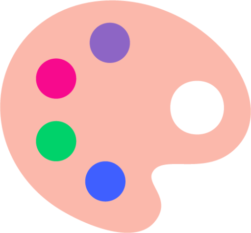

🎨 Theming

This section provides a comprehensive overview of various themes available for MkDocs.
Each theme is described, highlighting its key features, design principles,
and licensing information.
Material for MkDocs - 🥇42 · ⭐ 18K · MIT · 

Documentation that simply works.

- GitHub (👨💻 260 · 🔀 3.2K · 📦 46K · 📋 2.3K - 1% open · ⏱️ 18.04.2024)
- PyPi (📥 4.2M / month):
pip install mkdocs-material - Add to mkdocs.yml:
Extras:
theme: materialplugins: - blog - group - offline - search - social - tags
Cinder - 🥇20 · ⭐ 200 · 💤 · ❗Unlicensed ·
A clean, responsive MkDocs theme.

- GitHub (👨💻 23 · 🔀 100 · 📥 970 · 📦 620 · 📋 51 - 31% open · ⏱️ 05.01.2021)
- PyPi (📥 7.2K / month):
pip install mkdocs-cinder - Add to mkdocs.yml:
theme: cinder
Bootswatch - 🥇20 · ⭐ 140 · BSD-2 ·
MkDocs Bootswatch Themes.

- GitHub (👨💻 10 · 🔀 58 · 📦 1.1K · 📋 33 - 9% open · ⏱️ 29.12.2023)
- PyPi (📥 15K / month):
pip install mkdocs-bootswatch - Add to mkdocs.yml:
theme: cerulean theme: cosmo theme: cyborg theme: darkly theme: flatly theme: journal theme: litera theme: lumen theme: lux theme: materia theme: minty theme: pulse theme: sandstone theme: simplex theme: slate theme: solar theme: spacelab theme: superhero theme: united theme: yeti
Dracula - 🥈18 · ⭐ 58 · MIT ·
Dark theme for Mkdocs.

- GitHub (👨💻 4 · 🔀 7 · 📦 76 · ⏱️ 17.01.2024)
- PyPi (📥 2.5K / month):
pip install mkdocs-dracula-theme - Add to mkdocs.yml:
yaml theme: dracula
Bootstrap - 🥈16 · ⭐ 77 · BSD-2 ·
MkDocs Bootstrap Theme.

- GitHub (👨💻 6 · 🔀 37 · 📦 460 · 📋 16 - 6% open · ⏱️ 29.12.2023)
- PyPi (📥 3.8K / month):
pip install mkdocs-bootstrap - Add to mkdocs.yml:
theme: bootstrap
Simple Blog - 🥈15 · ⭐ 58 · MIT
Blog Template for Mkdocs

- GitHub (👨💻 3 · 🔀 4 · 📦 50 · 📋 19 - 47% open · ⏱️ 28.01.2024)
- PyPi (📥 450 / month):
pip install mkdocs-simple-blog - Add to mkdocs.yml:
theme: simple-blog
Windmill - 🥈14 · ⭐ 99 · 💤 · ❗Unlicensed ·
Outstanding mkdocs theme with a focus on navigation and usability.

- GitHub (👨💻 8 · 🔀 46 · 📦 300 · 📋 31 - 48% open · ⏱️ 11.03.2022)
- PyPi (📥 3.1K / month):
pip install mkdocs-windmill - Add to mkdocs.yml:
theme: windmill
Terminal for MkDocs - 🥈14 · ⭐ 77 · MIT ·
monospace theme for MkDocs.

- GitHub (🔀 1 · 📦 66 · 📋 56 - 44% open · ⏱️ 15.04.2023)
- PyPi (📥 940 / month):
pip install mkdocs-terminal - Add to mkdocs.yml:
Extras:
theme: terminalplugins: - md-to-html
Lantana - 🥈13 · ⭐ 11 · MIT ·
Lantana MKDocsHTML.

- GitHub (👨💻 3 · 📥 190 · 📦 3 · 📋 19 - 5% open · ⏱️ 03.04.2024)
- PyPi (📥 450 / month):
pip install lantana - Add to mkdocs.yml:
yaml theme: lantana
Ivory - 🥈11 · ⭐ 11 · 💤 · MIT ·
Ivory theme for MkDocs.

- GitHub (👨💻 2 · 🔀 4 · 📦 78 · 📋 5 - 40% open · ⏱️ 16.06.2020)
- PyPi (📥 5.2K / month):
pip install mkdocs-ivory - Add to mkdocs.yml:
theme: ivory
Zettelkasten - 🥈10 · ⭐ 8 · MIT ·
This is a Zettelkasten theme and plugin for MkDocs. It renders the MkDocs pages as cards (zettels).

- GitHub (👨💻 3 · 📥 19 · 📦 3 · 📋 10 - 70% open · ⏱️ 19.02.2024)
- PyPi (📥 83 / month):
pip install mkdocs-zettelkasten - Add to mkdocs.yml:
Extras:
theme: zettelkasten-solarized-lightplugins: - zettelkasten
KPN for MkDocs - 🥈10 · ⭐ 7 · MIT ·
KPN theme for MkDocs | owner=flow.

- GitHub (👨💻 3 · 📦 3 · ⏱️ 31.01.2024)
- PyPi (📥 890 / month):
pip install mkdocs-kpn - Add to mkdocs.yml:
theme: kpn
SWAN - 🥈10 · ⭐ 4 · ❗️AGPL-3.0 ·
SWAN MkDocs theme.

- GitHub (👨💻 4 · 🔀 3 · 📦 3 · ⏱️ 23.01.2024)
- PyPi (📥 150 / month):
pip install mkdocs-swan - Add to mkdocs.yml:
theme: swan
CustomMill - 🥉9 · ⭐ 12 · 💤 · ❗Unlicensed ·
Outstanding mkdocs theme with a focus on navigation, customization and usability.

- GitHub (👨💻 8 · 🔀 5 · 📦 17 · ⏱️ 10.03.2022)
- PyPi (📥 180 / month):
pip install mkdocs-custommill - Add to mkdocs.yml:
theme: custommill
Bootstrap 4 - 🥉9 · ⭐ 5 · 💤 · MIT ·
A vanilla Bootstrap 4 theme for MkDocs.

- GitHub (👨💻 3 · 📦 6 · 📋 5 - 20% open · ⏱️ 07.01.2023)
- PyPi (📥 86 / month):
pip install mkdocs-theme-bootstrap4 - Add to mkdocs.yml:
Extras:
theme: bootstrap4plugins: - bootstrap4-blockquotes - bootstrap4-tables
Alabaster - 🥉8 · ⭐ 36 · 💤 · ❗Unlicensed ·
Alabaster port for MkDocs.

- GitHub (👨💻 9 · 🔀 9 · 📋 17 - 17% open · ⏱️ 16.06.2020)
- PyPi (📥 610 / month):
pip install mkdocs-alabaster - Add to mkdocs.yml:
theme: alabaster
Windmill Dark - 🥉8 · ⭐ 34 · 💤 · ❗Unlicensed ·
Outstanding mkdocs theme with a focus on navigation and usability.

- GitHub (👨💻 4 · 🔀 10 · ⏱️ 12.05.2022)
- PyPi (📥 500 / month):
pip install mkdocs-windmill-dark - Add to mkdocs.yml:
theme: windmill-dark
BOOTSTRAP386 - 🥉7 · ⭐ 31 · 💤 · ❗Unlicensed ·
A vintage 1980s DOS inspired Twitter Bootstrap theme for MkDocs https://lramage.gitlab.io/mkdocs-bootstrap386.

- PyPi (📥 6K / month):
pip install mkdocs-bootstrap386 - GitLab (🔀 3 · 📋 7 - 57% open · ⏱️ 06.06.2018)
- Add to mkdocs.yml:
theme: bootstrap386
GitBook - 🥉7 · ⭐ 27 · 💤 · ❗Unlicensed ·
Default theme for GitBook for Mkdocs https://lramage.gitlab.io/mkdocs-gitbook-theme.

- PyPi (📥 7.2K / month):
pip install mkdocs-gitbook - GitLab (🔀 12 · 📋 18 - 44% open · ⏱️ 17.12.2018)
- Add to mkdocs.yml:
theme: gitbook
docSkimmer - 🥉6 · ⭐ 18 · ❗Unlicensed ·
An accessible, skimmable theme for MkDocs.

- GitHub (⏱️ 05.11.2023)
- Add to mkdocs.yml:
theme: docskimmer
Nature - 🥉6 · ⭐ 5 · ❗Unlicensed ·
A MkDocs theme.

- GitHub (👨💻 2 · 🔀 1 · 📦 41 · ⏱️ 14.09.2023)
- PyPi (📥 780 / month):
pip install mkdocs-nature - Add to mkdocs.yml:
theme: nature
Moonstone - 🥉6 · ⭐ 5 · 💤 · ❗Unlicensed ·
A documentation theme for mkdocs.

- GitHub (🔀 1 · 📦 8 · ⏱️ 15.06.2021)
- PyPi (📥 220 / month):
pip install mkdocs-moonstone - Add to mkdocs.yml:
theme: moonstone
Risonia - 🥉6 · ⭐ 3 · ❗Unlicensed ·
A simple theme for MkDocs, using the w3.css framework and configurable color schemes.

- GitHub (🔀 1 · 📦 2 · ⏱️ 01.09.2023)
- PyPi (📥 65 / month):
pip install mkdocs-risonia-theme - Add to mkdocs.yml:
Extras:
theme: risoniaplugins: - color-theme - w3css-classes
mkdocs-theme-topdf - 🥉5 · ⭐ 10 · 💤 · MPL-2.0 ·
A mkdocs theme for create PDF and printing with paged.js.

- GitHub (🔀 1 · 📦 2 · ⏱️ 26.06.2021)
- PyPi (📥 76 / month):
pip install mkdocs-theme-topdf - Add to mkdocs.yml:
theme: topdf
GitHub - 🥉5 · ⭐ 2 · 💤 · MIT ·
Theme Mkdocs Like a Github. DEMO =.

- GitHub (📦 8 · ⏱️ 25.02.2020)
- PyPi (📥 36 / month):
pip install mkdocs-github - Add to mkdocs.yml:
theme: github
mkdocs-rtl - 🥉4 · ⭐ 23 · 💤 · MIT
mkdocs rtl theme based on mkdocs-material.
- GitHub (👨💻 2 · 🔀 4 · 📋 2 - 50% open · ⏱️ 22.10.2017)
Cluster - 🥉3 · ⭐ 4 · 💤 · ❗Unlicensed ·
Another bootstrap theme for MkDocs.

- PyPi (📥 320 / month):
pip install mkdocs-cluster - GitLab (🔀 1 · ⏱️ 02.06.2016)
- Add to mkdocs.yml:
theme: cluster